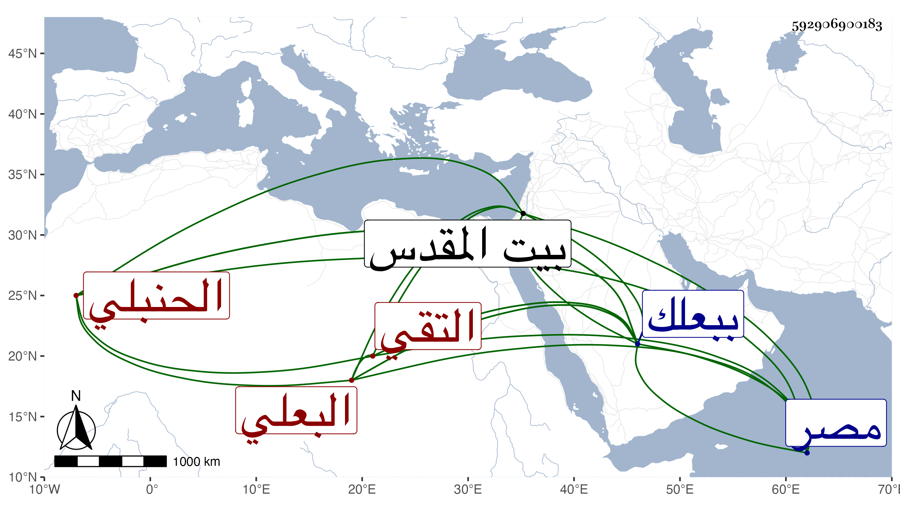

0902Sakhawi.DawLamic.ITO20230111-ara1.EIS1600.592906900183
Biography ID: 592906900183
164
أبو بكر بن عمر بن أحمد بن غرة التقي البعلي الحنبلي . ولد سنة ثمان وثمانمائة ببعلك ونشأ بها فحفظ القرآن عند الشمس بن الشحرور والمقنع والعمدتين والطوفى وألفية العراقي والملحة وألفية شعبان ولسان العرب له وغيرها وعرض على جماعة وسمع على ابن غازي وقطب الدين والشمس بن سعد في آخرين وتفقه بالبرهان ابن البحلاق وغيره ودخل مصر وزار بيت المقدس ولقيته ببعلك فأنشدني قوله:
| يا عين إن تنأى عن المختار | بفوات رؤيته وبعد الدار |
| فلكم لأوصاف الحبيب معاهد | فتمسكي من ذاك بالآثار |
إلى غيرهما مما أوردته في المعجم وغيره .
